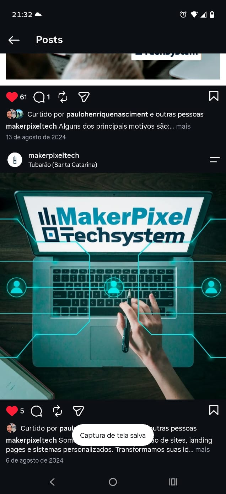
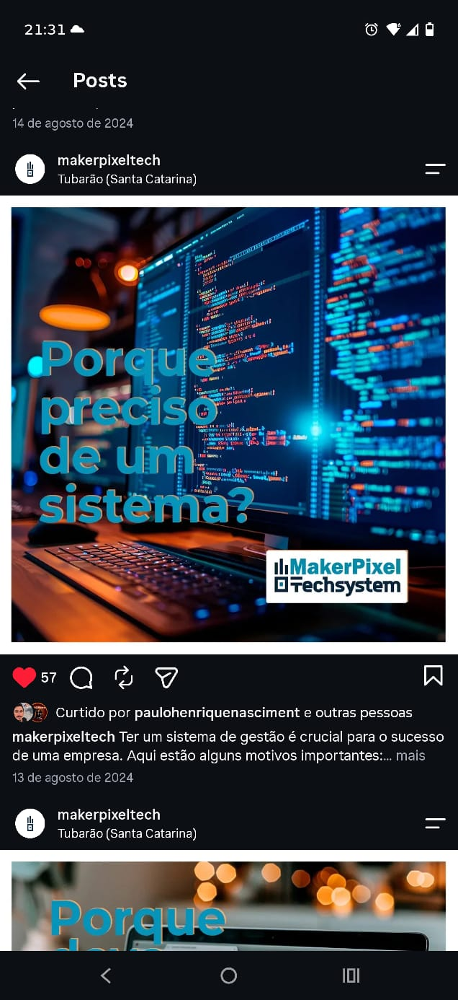
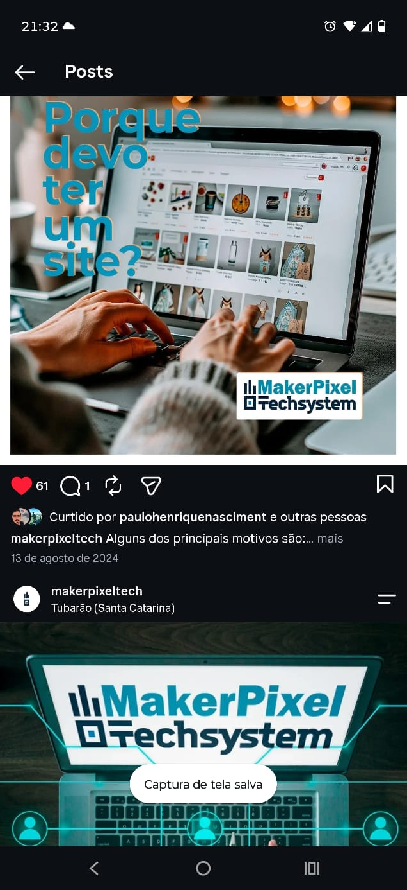
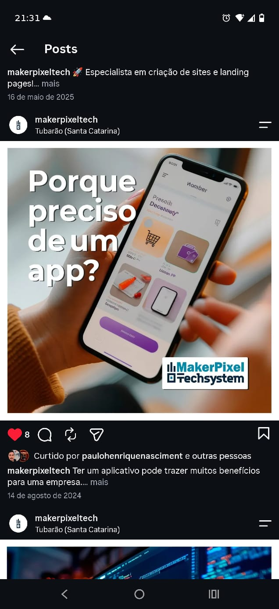
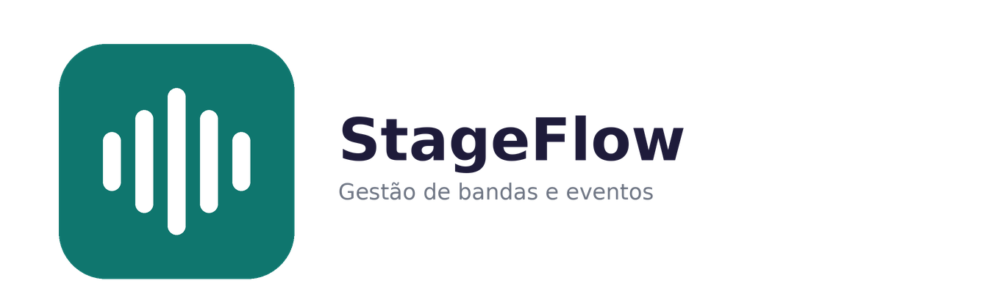
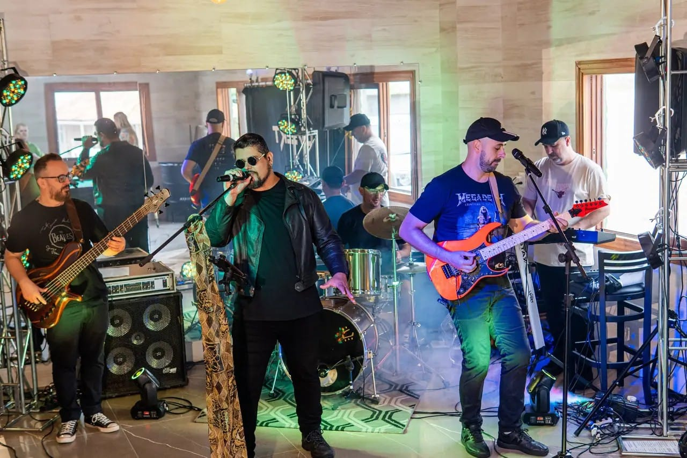
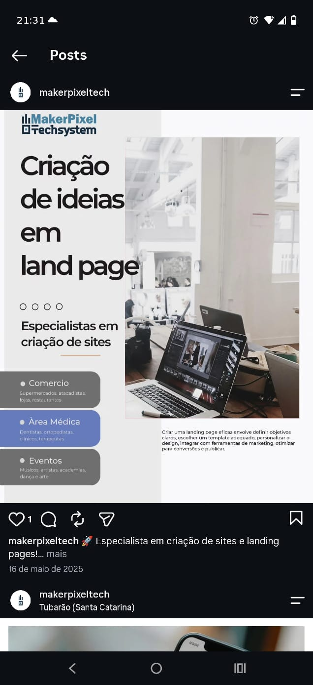
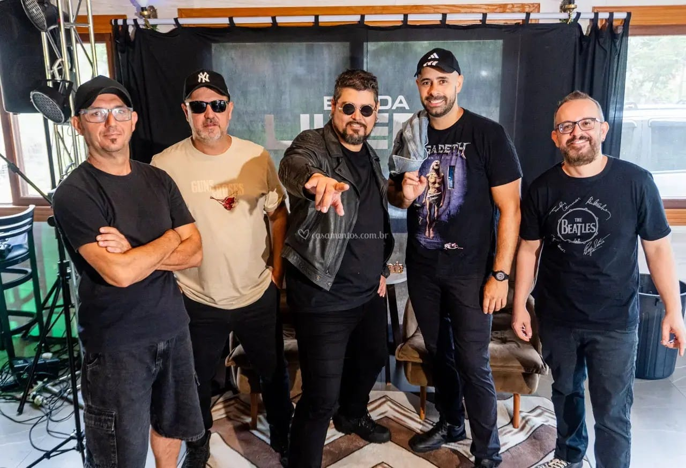

Da criação de landing pages cirúrgicas para médicos, comércio e eventos até sistemas complexos de gestão (financeiro, integração contábil e a plataforma StageFlow). Engenharia de software moderna feita para gerar resultados reais.
100%
Sob Medida
Zero
Amadorismo
24/7
Sites Online

Nascida em Tubarão, Santa Catarina, a MakerPixel Techsystem foi criada com um propósito claro: entregar soluções digitais de alto nível que unem precisão de engenharia com design moderno e resultados comerciais sólidos.
Fundada por Mauricio Goulart de Oliveira, a MakerPixel nasceu ao identificar uma dor latente no mercado: muitas empresas pagavam caro por sites genéricos que não convertiam ou tentavam gerenciar processos críticos em planilhas instáveis que geravam prejuízos.
Decidimos criar uma fábrica de software que atua como parceira estratégica. Criamos sistemas corporativos robustos (como o nosso sistema de conciliação bancária e contábil com SCI Único), a plataforma StageFlow para o mercado musical de eventos, e websites de alta conversão para comércios, médicos e prestadores de serviços.
Mauricio Goulart de Oliveira
Fundador & Desenvolvedor • MakerPixel Techsystem
Código limpo, arquitetura escalável e segurança de dados. Não entregamos gambiarras ou soluções frágeis. Cada sistema é feito para rodar com 99.9% de estabilidade.
Seu site precisa vender e seu sistema precisa economizar horas de trabalho. Medimos o sucesso do nosso trabalho pelo impacto financeiro positivo no seu negócio.
Comunicação direta pelo WhatsApp, sem enrolação e sem termos técnicos indecifráveis. Você fala direto com o desenvolvedor responsável pelo seu projeto.
Trabalhamos com o que há de mais veloz e moderno no ecossistema global: React, TypeScript, Java moderno, Cloud e automações com inteligência.
Cobrimos todo o ciclo digital: desde a página de vendas inicial até a plataforma operacional interna do seu negócio.
Páginas modernas e responsivas desenhadas para converter visitantes em clientes pagantes. Foco em velocidade de carregamento, SEO no Google e integração direta ao WhatsApp.
Painéis de controle, dashboards interativos, controle de estoque, ordens de serviço e áreas de clientes seguras. Chega de sofrer com planilhas confusas.
Nossa especialidade: conciliação bancária multi-extratos (OFX, TXT Sicoob, CSV, PDF), leitura inteligente de lançamentos e integração contábil oficial com o software SCI Único.
Sistema completo desenvolvido pela MakerPixel para bandas, músicos e produtores de shows. Centralize repertório, cifras, agenda de shows, integrantes e cachets em um só lugar.
Leve seu sistema ou serviço para a tela dos smartphones dos clientes. Aplicativos leves, rápidos, que funcionam offline e recebem notificações.
Seu projeto não fica desamparado após a entrega. Oferecemos planos de suporte contínuo, hospedagem de alta performance, atualizações de segurança e melhorias.
Veja as respostas reais para as principais dúvidas dos nossos clientes, direto das publicações da @makerpixeltech:

Empresas que dependem de papel ou planilhas perdem até 30% da sua produtividade corrigindo erros de digitação. Um sistema centralizado traz controle financeiro, automação de rotinas e relatórios em tempo real.

Seu site é sua vitrine que nunca dorme. Quem não está no Google não existe para clientes que buscam soluções na sua cidade. Um site profissional gera credibilidade imediata e fecha vendas 24 horas por dia.

O celular é a extensão do seu cliente. Um aplicativo ou web app permite enviar notificações instantâneas, manter o cliente fiel ao seu serviço e facilitar pedidos ou atendimentos em poucos toques.
Projetos produzidos pela MakerPixel com código em produção, interfaces reais e clientes atendidos.

Plataforma web avançada para bandas e músicos organizarem suas rotinas: controle de eventos, agenda sincronizada, letras/cifras, repertório e gestão de integrantes.
Sistema empresarial para conciliação multi-bancos (Sicoob, Sicredi, BB, Caixa), cruzamento de extratos com balancetes e geração automática de arquivos oficiais UTF-8/BOM para o SCI Único.

Website de alta performance para a Banda Livert: agenda dinâmica para contratantes, galeria multimídia de shows, integrantes e download de material oficial.

Páginas segmentadas para nichos de alta demanda: Clínicas Médicas & Dentistas, Lojas & Varejo, e Eventos Artísticos. Estruturadas para transformar cada clique em contato no WhatsApp.

Integração de identidade fotográfica de shows ao vivo diretamente no código dos sites, transmitindo a energia e credibilidade da banda para os contratantes.
Desenvolvemos o sistema exato que a sua operação exige. Sem mensalidades abusivas de sistemas engessados que não atendem ao seu fluxo de trabalho.
Selecione o tipo de projeto, marque as funcionalidades que precisa e envie a especificação pronta direto para o WhatsApp do Mauricio para receber valores e prazos!
Website Institucional Completo
Atendimento Rápido
Ao clicar no botão abaixo, sua proposta será montada e aberta diretamente no WhatsApp do Mauricio sem intermediários.
Tudo o que você precisa saber antes de iniciar seu projeto com a MakerPixel.
Landing pages e sites institucionais são entregues habitualmente entre 3 a 7 dias úteis. Sistemas personalizados e plataformas sob medida variam de acordo com o escopo (geralmente entre 2 a 4 semanas), com acompanhamento de progresso em tempo real.
Sim! Todos os nossos projetos são desenvolvidos no modelo mobile-first (100% otimizados para qualquer tela de celular) e com as melhores práticas de SEO técnico para indexação veloz no Google.
É o nosso motor especializado que cruza os lançamentos bancários de vários bancos com notas fiscais e balancetes, gerando os arquivos de texto no layout oficial exigido pelo sistema de contabilidade SCI Único, eliminando digitação manual.
O alinhamento é feito diretamente com o Mauricio via WhatsApp ou chamada de vídeo. Facilitamos o pagamento via PIX ou parcelado, com entrega do código limpo, documentação e suporte pós-lançamento.
Entre em contato direto pelo WhatsApp, e-mail ou Instagram. Atendimento ágil e consultoria sem compromisso para entender o que sua empresa precisa.
Preencha os campos abaixo para conversar diretamente com o desenvolvedor.